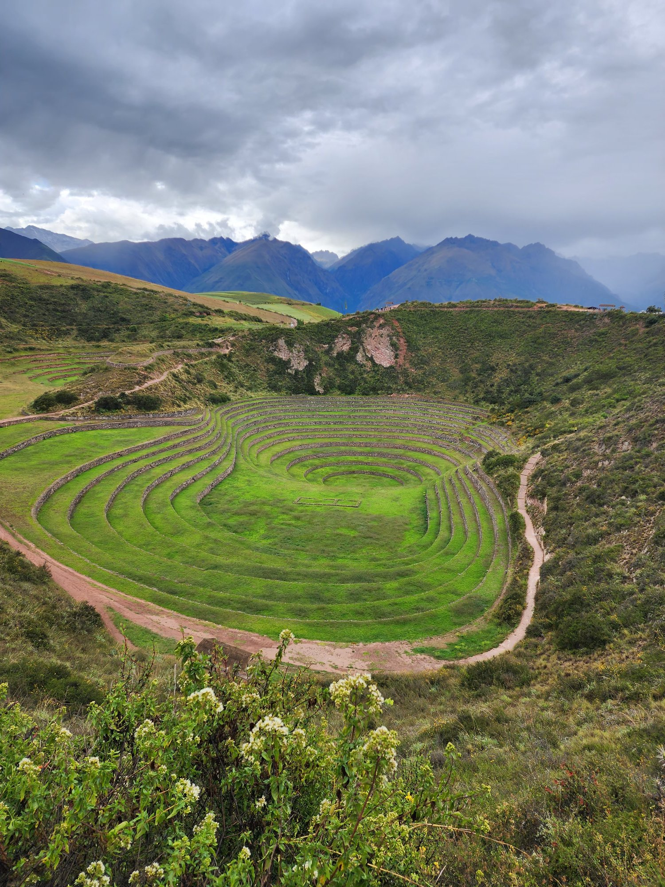
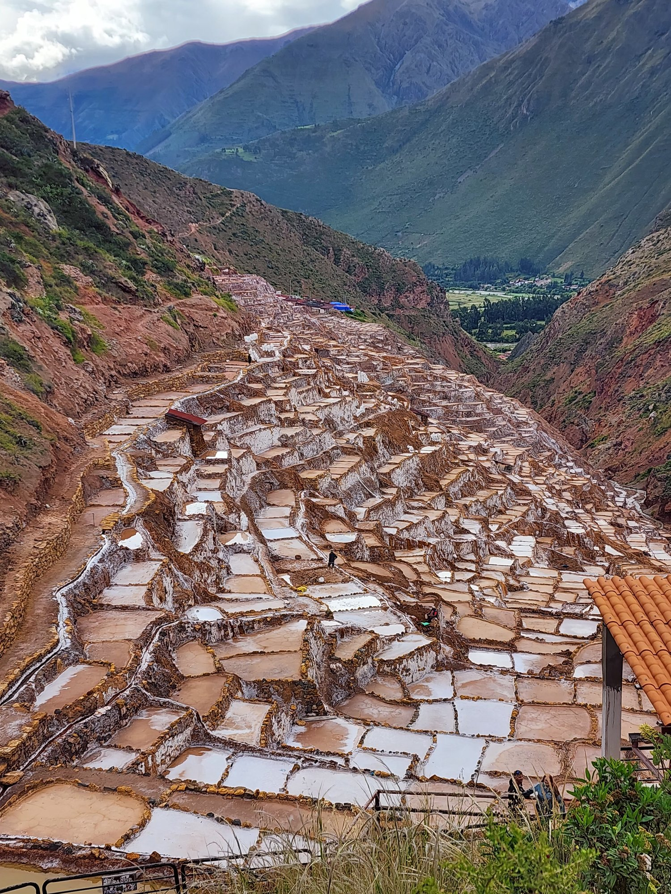
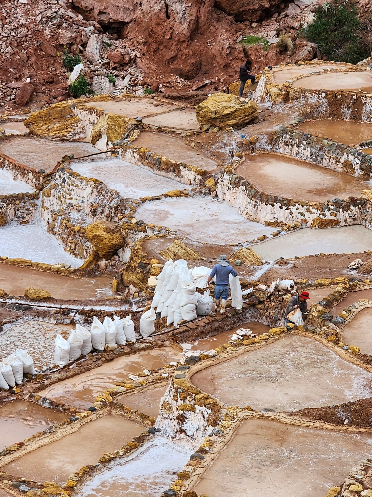
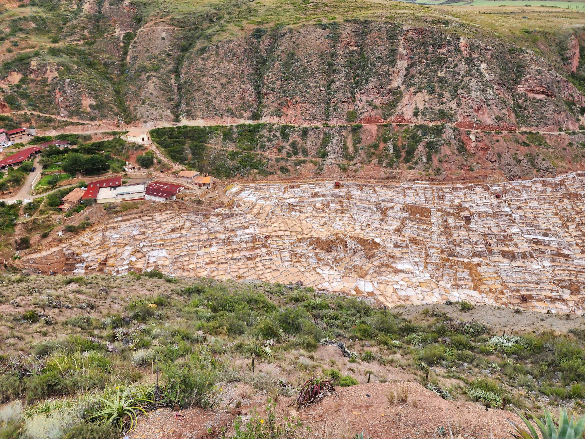
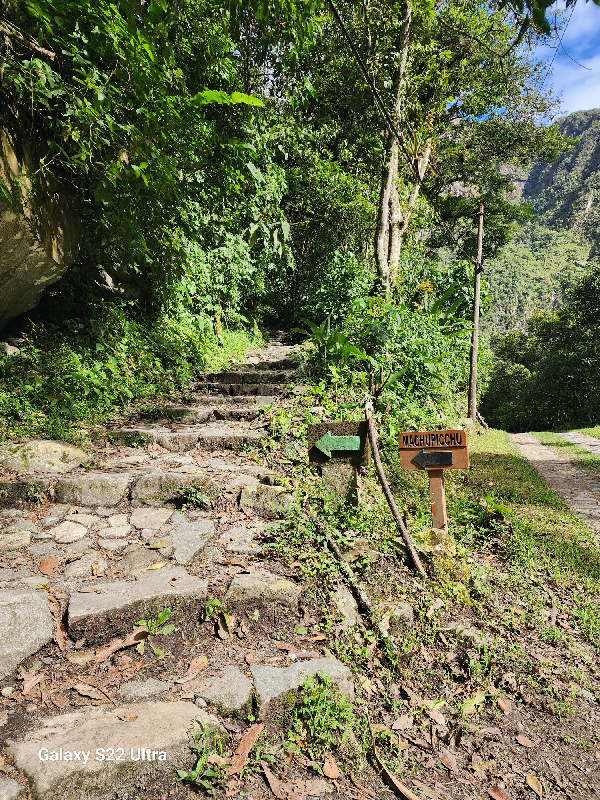
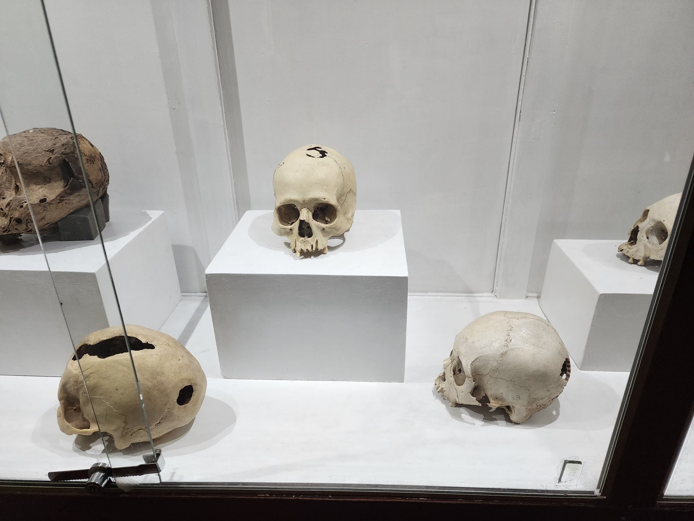

It was already night by the time I returned to the hotel.
I had watched the sun set from Sacsayhuamán and walked slowly down past the church of San Cristóbal into the city. The lights on the Plaza de Armas were warm, the evening air thin and cold. Back in my room I spread my notebook and maps across the desk.
When I opened the notebook, a map slipped out. The Sacred Valley (Valle Sagrado). The heart of Inca civilization, stretching along the Urubamba River north of Cusco. I had marked on it the places I had passed through these last days. Machu Picchu, Ollantaytambo, and on the way back, Moray and the salt pans of Maras (Salineras de Maras). To these the Sacsayhuamán I had climbed today had just been added.
Beside the desk lay museum catalogues and field photographs. A llama figurine, a maize variety, the angle of an Intihuatana, a mummified skull. Each had been an independent wonder — but now, lying side by side, I begin to see something else.
All of this was a different face of one and the same civilizational intelligence.
This chapter is about those faces. In chapter one, standing before the architectural wonder of Sacsayhuamán, I had asked: "how, in only ninety-five years?" Part of the answer was the social-organizational technology the Inca had accumulated. But what the Inca achieved was not architecture alone. They read the sky, sculpted the earth, healed the body, and governed an empire without writing. I look at these five faces in turn. Only then can we know precisely what it is we have lost.
If we cannot feel the weight of the loss, we will not feel the weight of the destruction either. For the story of five hundred years that part three takes up to land properly, this zenith first has to be remembered clearly.

The first point is Moray.
About fifty kilometers northwest of Cusco, on a plateau at 3,500 meters. From the village of Maras, twenty minutes down a dirt road, in the middle of a barren hillside. You step out of the car and walk a few paces along the ridge. Suddenly the land seems to drop away.
Three immense circular bowls have been excavated into the ground. Each is ringed by terraced steps. The largest is about thirty meters deep, about a hundred and fifty meters across.¹ Seen from above, it looks like a great amphitheater, or a tree ring made by the earth itself.
Anyone seeing it for the first time asks: a tomb? a reservoir? a place of ritual? The answer is a laboratory.
In the 1970s and 80s, agricultural researchers began measuring temperature and humidity on each terrace. The results were astonishing. The mean temperature difference between terrace levels reached two to two and a half degrees Celsius.² From the topmost ring to the bottom, about fifteen degrees. An elevation difference of more than a thousand meters had been artificially reproduced within a space of just over a hundred meters across.
Why does this happen? The circular form blocks the wind. The deep excavated shape changes the way ground heat is stored. Each tier receives a different combination of sunlight, wind, ground heat, and radiant heat — generating stratified microclimates.
The Inca used this space as an agricultural laboratory. The Andes contain extreme ecological diversity, from sea level to highlands above five thousand meters. Each elevation supports different crops. To develop or adapt new varieties, you need a place where many conditions can be tested at once. Moray was such a place.
The fruit of these experiments still lives among us. Peru has more than 3,500 officially registered varieties of potato.³ Different in color, shape, and size. From cold-hardy varieties for 4,500-meter highlands to drought-resistant strains, each variety is matched to a particular elevation and climate. And not just potatoes. Maize, quinoa, amaranth, kañiwa — all specialized at different elevations. The UN Food and Agriculture Organization (FAO) designates the Andes as one of the eight great centers of plant genetic resources in the world.⁴
More than ninety percent of the potatoes we eat today are of Andean origin. The Irish potato famine (1845–1849) became possible, German beer culture and Russian population growth became possible — all because of these Andean crops. The population explosion of early modern Europe would have been impossible without Andean crops.
You test a crop at the bottom. If it survives, you move it one tier up. If it survives again, another tier. Step by step, you expose it to cold and wind. Across generations, the crop adapts to ever higher altitudes. This takes decades, sometimes centuries.
This is artificial selection before Darwin. Farmers did not know the term "natural selection," but they had been practicing its principle for thousands of years. The Inca organized that practice into a state-level system. Several experimental centers like Moray are presumed to have existed across Peru. Each developed varieties suited to local conditions, and those seeds were distributed throughout the country via the Qhapaq Ñan road network.
Seed bank, research institute, distribution center. This was the substance of Inca agriculture. The phrase "primitive agriculture" collapses in the face of this system. Without writing, microscope, or genetics, the Inca achieved the most sophisticated varietal diversification in world agricultural history. Moray was not "primitive." It was a different kind of science than the modern.



The second point is the sky.
I stood before the Intihuatana on the grounds of Machu Picchu. The highest point of the city. To the north rises the peak of Huayna Picchu; to the south extends Machu Picchu mountain. To east and west, narrow ridges. In the middle of all this, a single dressed granite pillar stands. About 1.8 meters high. Its four corners point precisely to the cardinal directions — north, south, east, west.
The name means "the stone that ties the sun." In Quechua, *Inti* is sun, *Wata-na* is the act of tying.⁵

The Intihuatana is not a sculpted ornament. It is an astronomical instrument.
Each face of the pillar has been cut at a particular angle. At noon on the summer solstice (June 21) and the winter solstice (December 22), the shadow cast by this pillar points to a specific spot. On the equinoxes, the shadow nearly disappears. The sun stands directly above the pillar.
This site sits about thirteen degrees south of the equator. At this latitude certain astronomical events are highly visible. And the Intihuatana served as the reference point by which those events were recorded and confirmed.
Stones with similar functions existed at Ollantaytambo, at Pisac, at the Coricancha (the Temple of the Sun) in Cusco. The Spanish conquerors, regarding these stones as "idols," systematically destroyed them. The reason the Intihuatana at Machu Picchu has survived in relatively good condition is that the Spanish never knew of the existence of Machu Picchu. The city remained forgotten until the nineteenth century.⁶
The truly astonishing thing, however, lies elsewhere. Inca astronomy read not the stars themselves, but the darkness between the stars.
Western astronomy joins bright stars with lines to make constellations. Orion's belt, the handle of the Great Bear. Stars become the dots of a drawing. The Inca were different. In the clear night sky of the Andean highlands, the Milky Way actually flows like a river, and within that river the dark dust clouds were read by the Inca as animal forms.⁷
The most famous is Yacana, the figure of the llama. Its eyes are Alpha and Beta Centauri within the Milky Way; the dark clouds around them form an enormous shape. The Inca believed that Yacana moved along the Milky Way, descended to the sea at dawn to drink, and rose back into the sky to make rain. Beyond the llama there were also the fox (atoq), the toad (hanp'atu), the snake (machacuay) — all drawn not from stars, but from the dark between stars.
The West joined light to make pictures. The Inca read darkness to see them. In the same sky, two civilizations saw different things. This difference reveals a fundamental difference in how the world is perceived.
Inca astronomy was extraordinarily practical. Each year in June, just before the winter solstice, the Pleiades (Inca name Qollqa, "granary") reappear in the eastern sky. The date of their reappearance, and the brightness of their light — these two things were recorded by Inca farmers across generations. In years when the Pleiades were dim, rainfall was scant.⁸
In the late 1990s, research by Benjamin Orlove and others scientifically verified this observation. In El Niño years, high-altitude cirrus clouds form over the Andes, dimming the Pleiades. And El Niño disrupts Andean rainfall, causing droughts or floods.⁹ Which is to say: the Inca farmers were predicting, by the brightness of stars, an El Niño that modern meteorology only began to understand in the late twentieth century.
They did not call this "luck." Observation, intergenerational transmission, the collective intelligence of the community. Village elders looked to the Pleiades and decided, on that basis, when to plant and what to plant. Drought-resistant potatoes in dim years; thirstier maize in clear years. It was predictive science. As at Moray, before the Intihuatana I arrived at the same conclusion.

The third point is the body.
One room on the second floor of the Cusco Inka Museum is filled with ancient skulls. Dozens of skulls, every one of them with holes. The size and shape vary. Some the size of a coin, some the size of an egg, some the size of a small saucer. Round, square, oval. Some have only one, some have three or four, on a single skull.
These are the traces of trepanation. The surgical opening of the skull of a living person. Traces have been found in ancient Europe, Egypt, China, but the Andes is the region where trepanation was practiced most frequently and most skillfully.
The most striking fact is the survival rate. If new bone has grown around the edge of a hole (bone remodeling), it is evidence that the patient survived. Analysis of Inca-period Peruvian samples shows survival rates of 50 to over 80 percent, depending on the period.¹⁰
The comparison is astonishing. European surgical survival rates of the same era were far lower. As late as the end of the nineteenth century, most patients undergoing abdominal surgery in London hospitals died of infection. Until Joseph Lister introduced antisepsis in 1867, hospitals were closer to places of death. Yet Andean surgeons, five hundred years earlier — sometimes two thousand years earlier — drilled through skulls and kept their patients alive.
Several factors.¹¹
Tools — obsidian blades and bronze chisels. Obsidian cuts thinner and more precisely than modern surgical steel (it is still used today in some delicate eye surgeries).
Technique — circular scraping, square incision, ring cutting. Different techniques could be selected for different injuries and conditions, indicating a base of expert knowledge.
Herbs — coca leaf (Erythroxylum coca) was used as a topical anesthetic. The principle entered modern medicine when cocaine was isolated in the early twentieth century — becoming the origin of today's lidocaine and procaine.
Antibacterial plants — Boldo, Chanca Piedra, Muña. Herbs whose antibacterial and anti-inflammatory effects have since been confirmed by modern pharmacology.¹²
As someone with medical training, these facts stop me. Five hundred years ago Europe was bound to the two-thousand-year-old doctrine of the four humors, applying bloodletting and purges as everyday treatments. In the same period, Andean physicians were already performing successful brain surgery.
One more case. The cinchona tree. Andean Indigenous people knew that the bark of this tree was effective against periodic fevers — what we now call malaria. In the 1630s, Jesuit missionaries carried this knowledge to Europe. Seventeenth-century Europe was suffering from malaria. One of the reasons popes fled Rome in summer was the malaria of the city. The only effective treatment was Andean cinchona-bark powder.
In 1820, French chemists isolated the active compound from cinchona bark. The compound's name was quinine.¹³ Until the mid-twentieth century, quinine was the foundation of malaria treatment around the world. Britain was able to expand its tropical empire thanks to quinine (the origin of the gin and tonic lies here — tonic water was originally a way to mask the bitterness of quinine).
Which is to say: humanity, until the twentieth century, depended in its fight against malaria on the medicine the Inca taught it.
More than seven hundred Andean medicinal plants were used systematically.¹⁴ Most of that knowledge was never written down, and much of it disappeared after the Spanish conquest. Yet what remains continues to be the object of modern pharmacological inquiry.
The phrase "primitive medicine," like the recurring conclusion of this chapter, collapses before this system. The Inca simply walked a different road. And that road, at times, ran ahead of the West.
The fourth point is information. In chapter one I introduced the khipu briefly. An information system recorded in knots, the Inca's "writing." But our understanding of the khipu is still in motion. Recent research has been overturning older views.
The conventional view through the early twentieth century: the khipu was a numeric tool. Knot position gave place value, knot count gave value. A complex decimal calculation device — incapable of carrying narrative or language. This view dominated for a long time and provided the basis for the verdict that the Inca "had no writing."
But the view had several problems. Spanish chronicles themselves describe scenes of history being recited from a khipu. Royal genealogies, war records, mythic narratives. None of this is possible from a simple ledger. And the khipu specialists, the quipucamayoc, were a hereditary class who required years or decades of training.
In 2003, Gary Urton of Harvard, in Signs of the Inka Khipu, proposed a radical hypothesis.¹⁵ That the khipu's recording system has a binary structure. Knot present or absent, knot type (simple/long/figure-eight), twist direction (Z/S), material (cotton/llama hair), color combination — each takes one of two states. Combined, they yield thousands of distinguishable signs per unit. The expressive power, in theory, to record syllables, morphemes, words.
In 2017, Harvard undergraduate Manuel Medrano compared two eighteenth-century khipus from the village of San Juan de Collata in northern Peru with Spanish-language tax registers of the same period. He confirmed that specific color combinations correspond to specific surnames.¹⁶ Direct evidence that the khipu could record names.
The research is still in its early stages. A complete decipherment is far off. But the direction is clear — the khipu carried far more than we had thought.
And yet the scale of what we have lost is hard to gauge. In 1583, the Third Council of Lima formally classified the khipu as "an instrument of idolatry."¹⁷ Over the following decades, Catholic clergy burned khipus on sight as they came across them in villages. Some Indigenous people hid family khipus in walls, caves, tombs. That is why some 1,400 still exist today. How many burned no record tells us.
Tens of thousands? Hundreds of thousands? Administrative records, censuses, historical narratives, myths, songs, all accumulated across the empire — all turned to ash. If the burning of the Library of Alexandria is the symbolic loss of Western antiquity, the burning of the khipus was the silent destruction of Andean civilization. And unlike Alexandria — the Andean loss is barely mentioned in Western history textbooks. What is remembered and what is forgotten depends on who writes the history.
What was contained in those knots in the museum case? A census, perhaps. Someone's name. Or a tender love song. We do not know. The meaning vanished with the people who tied the knots. What we lost is not artifacts. It is a way of thinking.
The fifth point is administration.
At its peak, the Inca Empire held a population of roughly ten to twelve million.¹⁸ This was, by the standards of the time, one of the largest empires in the world. It included present-day Ecuador, Peru, Bolivia, northern Chile, northwest Argentina, and southern Colombia. Diverse peoples, dozens of languages, dramatically varied terrain. How was it possible to hold all of this together as a single political unit.
The answer lies in several layers. Here we look at three core principles.
Inca administration was organized on a decimal structure.¹⁹ A surprisingly simple yet efficient design.
Each level reported to the one above. Census, taxation (in the Inca system, instead of cash, labor tax — that is, mit'a — and tribute in goods), labor mobilization, dispute resolution. All flowed along this hierarchy. The boundaries of each unit were adjusted organically with the geography, and connected by the Qhapaq Ñan road network and the chaski courier system.
An interesting feature is the combination of inheritance and competence. The kuraka office was generally hereditary, but a manifestly incompetent successor could be replaced by the central government. Each kuraka was evaluated by the performance of his unit.
The most distinctive policy was mitima (mitimaes).²⁰ The Inca government would relocate entire conquered peoples to other regions, or place loyal Inca-aligned groups into newly conquered lands. Forced migration by community unit. A whole village was moved hundreds of kilometers in a single piece.
Three goals: weakening resistance (uprooted communities cannot easily organize rebellion), economic specialization (transplanting expertise across regions), cultural diffusion (the spread of Quechua and Inca culture).
To modern eyes the policy is brutal. Forced displacement is a violation of human rights. Stalin's deportations, the Cultural Revolution's "sending down," the separation of children at Canadian residential schools — history records many dark consequences of such policies. Mitima is no exception. This is one face of the fact that the Inca were an empire. We must not romanticize.
And yet at the same time — this policy made the empire's cultural integration possible. The Inca Empire was not a simple military conquest but a geographic reconstitution. Within a hundred years, integrating thousands of kilometers would have been impossible without it.
The third principle is the qolqa system.²¹ State storehouses built at strategic locations. The cool temperatures of high altitudes, combined with engineered air channels, allowed multi-year stockpiles of maize, potato (chuño), quinoa, charqui, and textiles.
Two functions: support of mit'a workers (qolqa supplies fed and clothed the workers — without qolqa, mit'a could not function), and famine relief (surplus from one region moving to a region of poor harvest).
The second function is particularly remarkable. The Inca were one of the first states to treat famine as a state responsibility. State-led famine relief became standard in Europe only in the late nineteenth century.²² The Inca had systematized it in the fifteenth. That this system worked is confirmed by the fact that — until the eve of Spanish invasion — the empire as a whole enjoyed relatively stable food supply.²³
Looking at these three together — the decimal administration, mitima, qolqa — the character of the Inca Empire becomes clear.
It was not primitive communism. There were definite hierarchies (Inca nobility, kuraka, commoners), and there was forced migration and labor mobilization. Nor was it absolute monarchy. Local communities (ayllu) retained considerable autonomy, the state coordinated indirectly, and the survival of communities was the state's responsibility.
This system has not yet been properly named. None of the European categories — absolutism, republic, democracy, feudalism, communism — captures it precisely. The Inca Empire stands outside our conceptual frame. This is not a deficiency of the Inca but a limit of our theory. To recognize this limit is itself a step in this journey.
The night had grown deep. The notebook on the desk was full of writing, lines connecting the dots on the map. Five faces had begun to draw a single outline.
The circular steps of Moray. The four corners of the Intihuatana. The hole in the skull. The cord tied with knots. The decimal tiers of administration. These five appear to be different domains, but seen again, they are all different expressions of the same principle.
Moray is dialogue with nature. Not domination, but negotiation. The Intihuatana is dialogue with the sky. Not calculation, but observation. Skull surgery is dialogue with the body. Not conquest, but attunement. The khipu is dialogue with information. Not abstraction, but embodiment. Decimal administration is dialogue with community. Not command, but coordination.
Everything took the form of dialogue. Nature, sky, body, information, community — none of them was something to be conquered or dominated. Each was simply another face of making relation. This is the deepest principle of Inca civilization. The megaliths of Sacsayhuamán, the steps of Moray, the trepanation blade, the knots of the khipu, the storehouses of the qolqa — all were the material expression of the same relational logic.
When I began this chapter, I could hardly believe these were "products of one civilization." Now I can. More than that, it is clear they could not have existed apart from each other. Inca agriculture could not have functioned without astronomy; astronomy could not have been recorded without administration; administration could not have endured without the health of the community. It is a single weave.
What is at the center of that weave? The last word I wrote before closing the notebook — water. Inca agriculture was impossible without water management. The cities were designed in accord with the flow of water. In medicine water was the medium of purification, in astronomy water was the metaphor of the Milky Way, in religion water was a god. And above all — the most refined achievement of Inca engineering was the technology of handling water.
Tomorrow morning I go to Pisac in the car of the guide I met yesterday. After that, to Tipón. There I will meet, in person, water that has been flowing for five hundred years. Only after seeing that water can I fully understand what stood at the center of these five faces.
I close the book and turn off the light. Outside the window, the lights of Cusco are dim. Beneath them, somewhere — a five-hundred-year-old canal is still moving water through the night.
¹ On the dimensions of Moray's largest bowl, see Kenneth R. Wright, Ruth M. Wright, Alfredo Valencia Zegarra, and Gordon F. McEwan, Moray: Inca Engineering Mystery (Reston, VA: ASCE Press, 2011), pp. 15-22.
² On temperature differences between Moray terraces see ibid., chapter 3. Early studies reported about 2°C; later work has reported 2–2.5°C.
³ Official statistics on Peruvian potato varietal diversity follow the materials of the International Potato Center (CIP). Headquartered in Lima, the CIP holds the world's largest potato genetic resource bank.
⁴ The FAO designation of world plant genetic resource centers descends from N. I. Vavilov's classification system of the 1920s. Vavilov was the first to designate the Andes as one of the principal centers of world crop origins.
⁵ On the etymology and function of the Intihuatana see Brian S. Bauer and David S. P. Dearborn, Astronomy and Empire in the Ancient Andes: The Cultural Origins of Inca Sky Watching (Austin: University of Texas Press, 1995), pp. 52-58.
⁶ On why Machu Picchu remained unknown to Spanish conquerors see Richard L. Burger and Lucy C. Salazar, eds., Machu Picchu: Unveiling the Mystery of the Incas (New Haven: Yale University Press, 2004).
⁷ On the Inca system of "dark cloud constellations" see Gary Urton, At the Crossroads of the Earth and the Sky: An Andean Cosmology (Austin: University of Texas Press, 1981).
⁸ On the seasonal visibility of the Pleiades and Inca agricultural prediction see Benjamin S. Orlove, John C. H. Chiang, and Mark A. Cane, "Forecasting Andean rainfall and crop yield from the influence of El Niño on Pleiades visibility," Nature 403 (2000): 68-71.
⁹ Ibid. Orlove and colleagues demonstrated that traditional Andean farmer observation aligns to a striking degree with modern El Niño prediction.
¹⁰ For a comprehensive study of trepanation survival rates in Peru see John W. Verano, Holes in the Head: The Art and Archaeology of Trepanation in Ancient Peru (Washington, DC: Dumbarton Oaks, 2016).
¹¹ Ibid. Detailed analysis of techniques and tools is included.
¹² On modern pharmacological verification of Andean medicinal plants, see for example G. Bussmann, "The globalization of traditional medicine in Northern Peru," Economic Botany 61 (2007): 344-362.
¹³ On the isolation and history of quinine see Fiammetta Rocco, The Miraculous Fever Tree: Malaria, Medicine and the Cure that Changed the World (New York: HarperCollins, 2003).
¹⁴ The estimate of 700 Andean medicinal plants follows R. W. Bussmann and D. Sharon, "Traditional medicinal plant use in Northern Peru: tracking two thousand years of healing culture," Journal of Ethnobiology and Ethnomedicine 2:47 (2006).
¹⁵ Gary Urton, Signs of the Inka Khipu: Binary Coding in the Andean Knotted-String Records (Austin: University of Texas Press, 2003).
¹⁶ Manuel Medrano and Gary Urton, "Toward the Decipherment of a Set of Mid-Colonial Khipus from the Santa Valley, Coastal Peru," Ethnohistory 65, no. 1 (2018): 1-23.
¹⁷ On the khipu-related decisions of the Third Council of Lima (1582-1583) see Sabine Hyland, Gods of the Andes: An Early Jesuit Account of Inca Religion and Andean Christianity (University Park, PA: Pennsylvania State University Press, 2011).
¹⁸ Estimates of the Inca Empire's population vary widely, from 6 to 14 million. This book follows the median of the mainstream literature. Terence D'Altroy, The Incas, 2nd ed. (Malden, MA: Wiley-Blackwell, 2014), pp. 50-53.
¹⁹ On the decimal structure of Inca administration see ibid., chapter 8.
²⁰ On the mitima policy see María Rostworowski, History of the Inca Realm, trans. Harry B. Iceland (Cambridge: Cambridge University Press, 1999), pp. 59-63.
²¹ On the qolqa storehouse system see Terry Y. LeVine, ed., Inka Storage Systems (Norman: University of Oklahoma Press, 1992).
²² On the development of modern famine relief policy in Europe see Cormac Ó Gráda, Famine: A Short History (Princeton: Princeton University Press, 2009).
²³ On the food stability of the Inca Empire, several Spanish chronicles attest. For modern scholarship see D'Altroy (2014), op. cit., chapter 10.